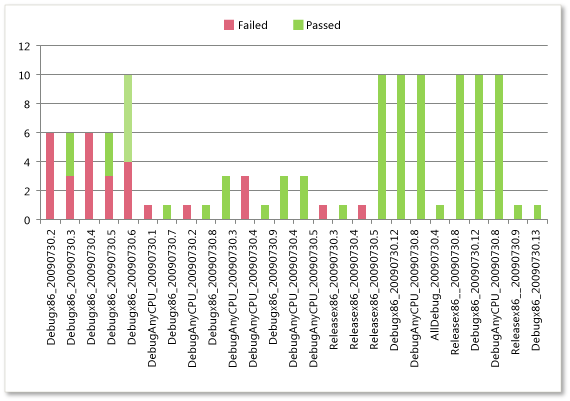
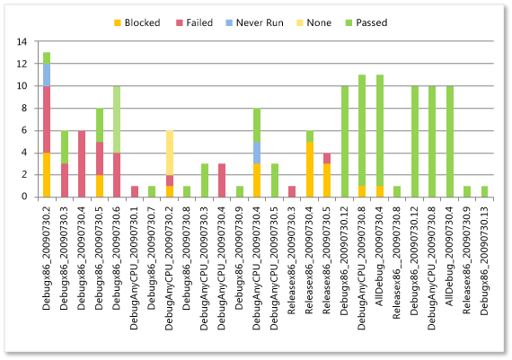

Teams who are responsible for testing software can use the Build Quality report to help monitor the success or failure rate of test activity with each build. The Build Quality report provides the following reports, which show the test results for all build definitions for a team project.
-
Build Verification Testing: Helps the team monitor the quality of builds by showing test results for all automated tests that are marked as Build Verification Test (BVT) that are run during the build process.
-
Test Activity Per Build: Helps the team monitor the quality of builds by showing test results for all tests that have been run against the build for all or selected test plans.
 Note
Note
You can view the Build Quality report if you open Team Explorer, open the team project, open the Excel Reports folder, and open the Test Team Management folder. You can access this folder only if your team project portal has been enabled and is provisioned to use SharePoint Products. For more information, see Access a Team Project Portal and Process Guidance.
These reports are available only when the team creates test plans and starts to run tests by using Microsoft Test Manager. For information about how to define test suites and test plans, see Organizing Test Cases Using Test Suites. For information about how to access this report, see Excel Reports (GovDev).
|
In this topic |
Related topics |
Required Permissions
To view the report, you must be assigned or belong to a group that has been assigned the Read permissions in SharePoint Products for the team project.
To modify or customize the report, you must be a member of the TfsWarehouseDataReaders security role in SQL Server Analysis Services. You must also be assigned or belong to a group that has been assigned the Members permissions in SharePoint Products for the team project. For more information, see Grant Access to the Databases of the Data Warehouse for Visual Studio ALM and Managing Permissions.
 Data
in the Reports
Data
in the Reports
The Build Quality reports illustrate the cumulative count of test results for all build definitions for a team project. Both reports are based on PivotTable reports that access data that is stored in the data warehouse. The count that is shown in each report is a count of the most recent version of each test result in a particular build.
Build Verification Testing
Test Activity per Build
The following table describes the report filters and fields that are used in the PivotTables that generate the Build Quality reports.
|
Filters |
Fields |
|---|---|
Filter specific to the Build Verification Testing report :
|
|
Required Activities for Monitoring Build Quality
For the Build Quality report to be useful and accurate, the team must perform the following activities:
-
Define test cases and test plans, and assign test cases to the test plans. For more information, see Defining Your Testing Effort Using Test Plans.
-
Configure a build system. To use Team Foundation Build, you must set up a build system.
For more information, see Configure Your Build System.
-
Create build definitions. You can create several build definitions and then run each of them to produce code for a different platform. Also, you can run each build for a different configuration.
For more information, see Creating and Working with Build Definitions.
-
Define tests to run automatically as part of the build. As part of the build definition, you can define tests to run as part of the build or to fail if the tests fail.
For more information, see Define a Build Using the Default Template and How to: Configure and Run Scheduled Tests After Building Your Application .
-
Run builds regularly. You can run builds at set intervals or after every check-in. You can create regular builds when you use the schedule trigger.
For more information, see Create a Basic Build Definition and Running and Monitoring Builds.
-
Run tests. For more information, see Running Tests.
-
(Optional) To support filtering, assign Iteration and Area paths to each test case.
Note
The project administrator for each team project defines area and iteration paths for that project so that the team can track progress by those designations. For more information, see Create and Modify Areas and Iterations.
Updating
and Customizing the Report
You can update the Build Quality report by opening it in Office Excel and changing the filter options for the PivotTable report for one of the worksheets. You can customize each report to support other views, as the following table describes.
|
View |
Action |
|---|---|
|
Build quality for select iterations |
Change the filter for Iteration(default=All) |
|
Build quality for select product areas |
Change the filter for Area(default=All) |
|
Build quality for select build definitions |
Change the filter for Build Definition Name(default=All) |
|
Build quality for the most recent six, eight, or more weeks |
In the Columns PivotTable Field List, add the Date - Setsfield and select @@Last 6 weeks@@or other set |
For more information about how to work with and customize PivotTables and PivotChart reports, see the following pages on the Microsoft Web site: